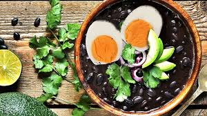

Sopa negra

Lista de Ingredientes
- 4 tazas de frijol cocinado y su caldo
- 1 cebolla
- 1 ajo
- Culantro al gusto
- sal y pimienta al gusto
- 2 cucharadas de salsa inglesa y 2 tazas de agua
- 4 huevos duros
- 4 tazas de arroz(acompañamiento)
Intrucciones:
- En una licuadora colocamos los frijoles, la mitad de las esecias, dos tazas de agua y consome de pollo y se licua
- En una olla colocamos un poco de mantequilla, el resto de las especias y verduras
- Se agrega en la olla lo que se preparo en la licuadora y se cocina por 20 minutos y a final se agrega el culantro
- Se acompaña con arroz y los huevos duros
Informacion nutricional
- 391 g contienen 290 calorias
- 6.1g de grasas
- 46.7g de carbohidratos
- 15g de proteina
Video tutorial